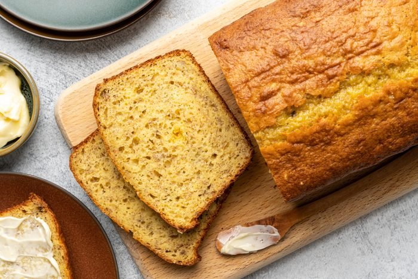

Banana Bread
- 3-4 very ripe bananas
- 1 box (15.25 ounces) yellow cake mix
- 2 large eggs
- The key to flavorful banana bread is using very ripe bananas. As the skin darkens, the banana flavor becomes more pronounced. You’ll need 1-1/2 cups of mashed bananas for this recipe, so I used about 3 ripe bananas.
- In a large bowl, combine the mashed bananas with the cake mix and two eggs. Mix well until the ingredients are combined.
- Transfer the batter to a greased 9×5 inch loaf pan. Bake in a preheated 350°F oven for 45 minutes or until a tester inserted in the center of the loaf comes out clean. Cool in the pan on a wire rack for 10 minutes, then invert onto the rack to cool completely before slicing.